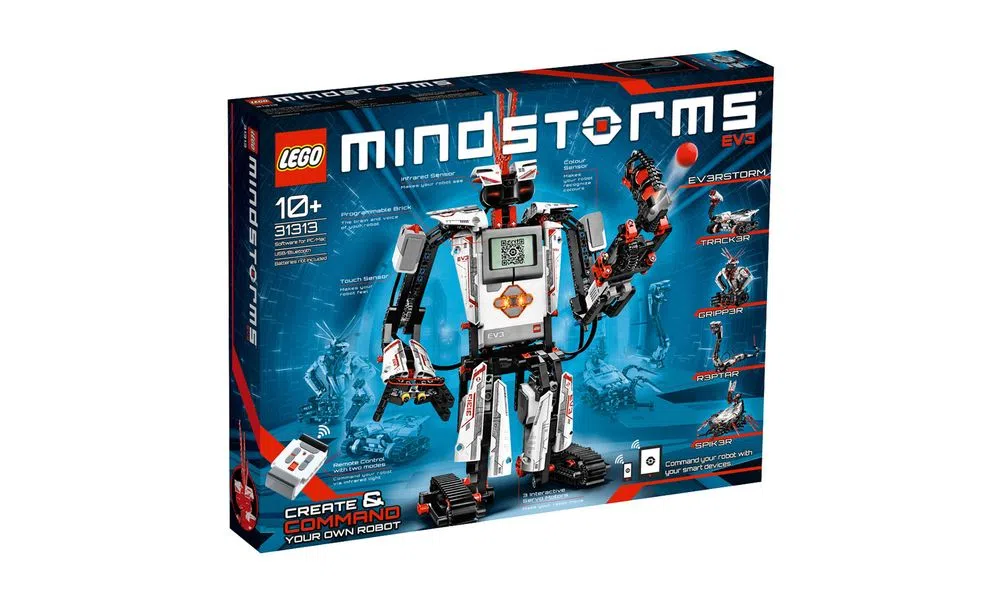

Lego Mindstorms
Lançada no ano de 1998, o sistema LEGO Mindstorms é uma linha específica para a área de Educação Tecnológica. Sua utilização baseia-se no aprendizado lúdico, cuja função didática aborda a prática de conteúdos da área de tecnologia. Os estudantes utilizam os conjuntos para desenvolver projetos de robótica.
Disponibilizado em três partes, o LEGO Mindstorms possui Fluxograma e Diagramas de Trabalho, Conjunto de Construção e Software RoboLAB
Seu desenvolvimento se deu graças a parceria entre o EGO Group e o Media Lab do MIT
